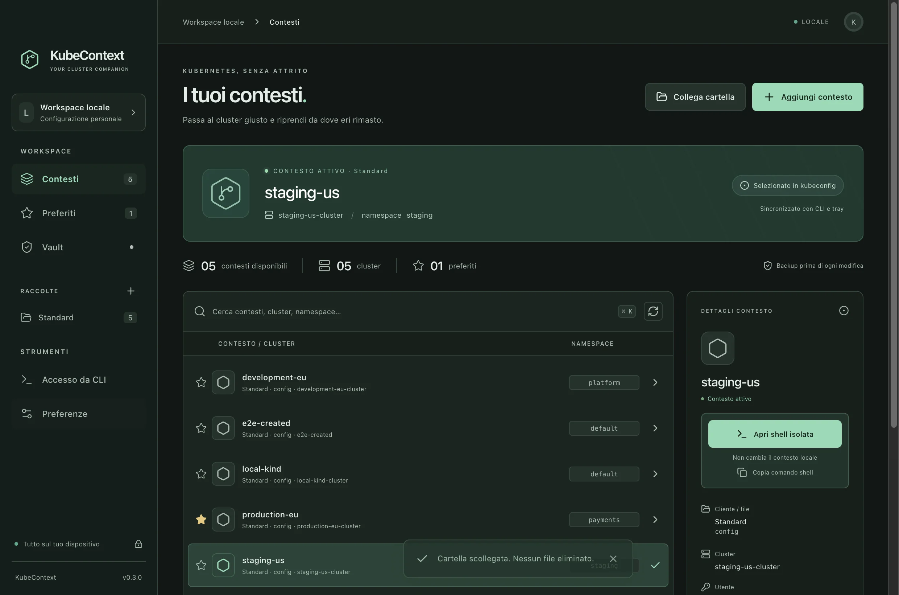

Desktop, tray e CLI
I tuoi contesti
Kubernetes.
Organizza i kubeconfig per cliente, cambia contesto dalla tray o apri una shell dedicata con un kubeconfig temporaneo.
macOS · Windows · Linux

01 / Raccolte
Un workspace, file separati.
Collega le directory dei clienti e ritrova i contesti insieme a quelli personali. KubeContext mostra il file di origine e crea un backup prima di salvarvi una modifica.
Standard
~/.kube/configAcme
~/clienti/acme/Lab
~/lab/kubeconfigs/02 / Shell isolata
Apri il contesto in un terminale.
Lancia la shell dall’app o dalla CLI. Il prompt mostra raccolta e contesto, mentre KUBECONFIG punta a una copia privata della sessione.
$ kcm shell prod --folder Acme
[KCM: Acme / prod] ~ $
Download
KubeContext per il tuo desktop.
Su GitHub trovi i pacchetti, le note di versione e i checksum SHA-256 delle release pubblicate.
Vedi le release su GitHub ↗- macOS
- DMG e ZIP · Apple Silicon e Intel
- Windows
- ZIP portatile · x64
- Linux
- Archivio tar.gz · x64